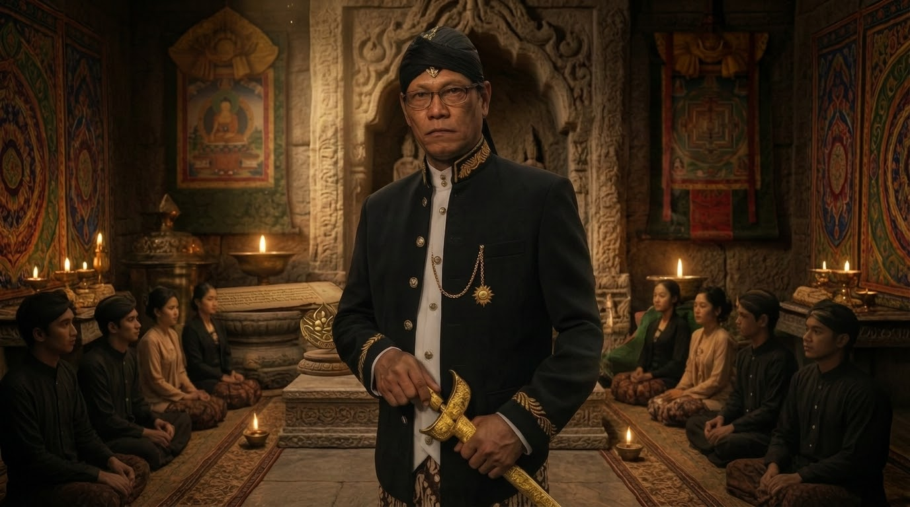

JATINING PANGURIPAN DAN HAKIKAT DIRI

1. Hakikat Jatining Panguripan.
Jatining Panguripan merupakan salah satu pokok pemahaman mendasar dalam Kawruh Uttamopadesa yang menjelaskan tentang dasar keberadaan kehidupan. Apabila Sang Sumber Panguripan dipahami sebagai asal segala keberadaan, dan Prabhawaning Panguripan dipahami sebagai daya serta tatanan yang berkaitan dengan berlangsungnya kehidupan, maka Jatining Panguripan mengarahkan pemahaman kepada hakikat panguripan itu sendiri.
Jatining Panguripan tidak dapat disamakan dengan keberadaan jasmani manusia. Raga merupakan bagian dari keberadaan manusia yang dapat diamati melalui panca indera, mengalami pertumbuhan, perubahan, dan akhirnya mengalami kematian. Akan tetapi, pemahaman mengenai panguripan tidak berhenti pada keberadaan raga. Ada persoalan yang lebih mendasar, yaitu mengenai dasar kehidupan yang memungkinkan keberadaan manusia berlangsung.
Dalam pemaparan Kawruh Uttamopadesa, Jatining Panguripan ditempatkan sebagai dasar keberadaan yang tidak dapat disederhanakan menjadi sekadar tubuh atau fungsi jasmani. Tubuh merupakan bagian dari kehidupan yang mempunyai proses dan keterbatasan. Sementara itu, Jatining Panguripan menunjuk pada hakikat yang menjadi dasar bagi pemahaman tentang kehidupan.
Pembedaan tersebut penting agar manusia tidak hanya memahami dirinya berdasarkan apa yang terlihat. Raga memang merupakan bagian nyata dari keberadaan manusia, tetapi manusia juga mempunyai dimensi kehidupan yang berkaitan dengan jiwa dan kesadaran. Oleh sebab itu, pengenalan terhadap diri memerlukan pemahaman yang lebih luas daripada pengamatan terhadap tubuh.
Jatining Panguripan juga tidak boleh dipahami sebagai hasil dari keinginan manusia. Manusia tidak menciptakan dasar keberadaannya sendiri. Ia hadir dalam kehidupan tanpa terlebih dahulu menentukan asal keberadaannya, bentuk tubuhnya, ataupun seluruh keadaan yang menyertai kelahirannya. Kenyataan ini mengingatkan bahwa keberadaan manusia mempunyai dasar yang melampaui kehendak pribadinya.
Kesadaran terhadap Jatining Panguripan mengarahkan manusia untuk memandang kehidupan dengan lebih mendalam. Kehidupan bukan sekadar kesempatan untuk memenuhi kebutuhan jasmani, memperoleh kedudukan, atau mengumpulkan berbagai hal yang bersifat sementara. Kehidupan juga merupakan kesempatan untuk mengenali hakikat keberadaan, mengembangkan kesadaran, dan menjalankan tanggung jawab sebagai manusia.
Dengan demikian, Jatining Panguripan menjadi landasan bagi pemahaman tentang hakikat diri. Manusia tidak cukup hanya mengenali tubuh dan pengalaman hidupnya, tetapi perlu memahami hubungan antara dasar keberadaan, jiwa, kesadaran, serta unsur-unsur yang membentuk kehidupan manusia.
2. Hubungan Jatining Panguripan dengan Sang Sumber Panguripan.
Pemahaman mengenai Jatining Panguripan tidak dapat dilepaskan dari Sang Sumber Panguripan. Keduanya mempunyai kedudukan yang berbeda dalam susunan pemikiran Kawruh Uttamopadesa, tetapi memiliki hubungan yang mendasar.
Sang Sumber Panguripan menunjuk pada asal segala keberadaan. Jatining Panguripan menunjuk pada dasar hakikat panguripan. Pembedaan ini diperlukan agar manusia tidak mencampuradukkan pengertian mengenai asal keberadaan dengan pengertian mengenai hakikat kehidupan.
Manusia dapat memahami bahwa dirinya merupakan bagian dari keberadaan yang bersumber dari Sang Sumber Panguripan. Namun, pengenalan tersebut tidak berarti bahwa manusia telah memahami seluruh hakikat Sang Sumber Panguripan ataupun seluruh kedalaman Jatining Panguripan.
Keterbatasan pemahaman manusia harus ditempatkan secara tepat. Manusia dapat melakukan perenungan dan mengembangkan pengertian melalui Kawruh Sejati, tetapi tidak seharusnya menganggap bahwa rumusan pemikirannya telah mencakup seluruh kenyataan. Pemahaman merupakan jalan untuk mengenali, bukan alasan untuk merasa memiliki atau menguasai sumber kebenaran.
Dalam hubungan tersebut, Prabhawaning Panguripan memberikan pemahaman mengenai daya dan tatanan yang berkaitan dengan berlangsungnya kehidupan. Sang Sumber Panguripan menjadi dasar pengenalan terhadap asal keberadaan, Prabhawaning Panguripan menjelaskan tatanan berlangsungnya kehidupan, sedangkan Jatining Panguripan mengarahkan perhatian kepada hakikat kehidupan itu sendiri.
Ketiga pemahaman tersebut saling berkaitan. Apabila manusia hanya memperhatikan asal keberadaan, ia belum tentu memahami bagaimana kehidupan berlangsung. Apabila hanya memperhatikan tatanan kehidupan, ia belum tentu memahami dasar hakikat panguripan. Sebaliknya, apabila membicarakan Jatining Panguripan tanpa memahami hubungan dengan Sang Sumber Panguripan, pemahaman dapat kehilangan landasan yang mendasarinya.
Kesadaran terhadap hubungan tersebut menumbuhkan sikap menghargai kehidupan. Manusia tidak memandang dirinya sebagai keberadaan yang muncul tanpa dasar dan tidak pula menganggap bahwa kehidupan hanya mempunyai arti selama tubuhnya masih dapat memenuhi keinginan. Ia mulai memahami bahwa keberadaan mempunyai kedalaman yang perlu dikenali melalui kesadaran.
Dalam spiritualitas Uttamopadesa, pengenalan terhadap hubungan antara Sang Sumber Panguripan dan Jatining Panguripan menjadi bagian dari perjalanan memahami kehidupan secara utuh. Pemahaman tersebut tidak dimaksudkan untuk membangun kebanggaan terhadap pengetahuan, melainkan untuk menumbuhkan kesadaran mengenai kedudukan manusia dalam keseluruhan panguripan.
3. Jatining Panguripan, Jiwa, dan Raga.
Salah satu persoalan penting dalam memahami hakikat diri adalah membedakan keberadaan Jatining Panguripan, jiwa, dan raga. Ketiganya tidak seharusnya dicampuradukkan karena mempunyai kedudukan dan pengertian yang berbeda.
Raga merupakan keberadaan jasmani manusia. Melalui raga, manusia berhubungan dengan lingkungan dan menjalani berbagai aktivitas kehidupan. Raga memiliki struktur, kebutuhan, kemampuan, dan keterbatasan. Ia mengalami pertumbuhan sejak manusia dilahirkan, kemudian mengalami perubahan seiring perjalanan waktu, hingga akhirnya berhenti menjalankan fungsi kehidupannya.
Jiwa berada dalam dimensi pemahaman yang berbeda dari raga. Dalam pemaparan Kawruh Uttamopadesa, jiwa mempunyai hubungan dengan Jatining Panguripan dan menjadi dasar bagi pemahaman mengenai keberadaan manusia yang tidak semata-mata jasmani. Jiwa tidak dapat disamakan dengan tubuh, sebab tubuh merupakan keberadaan yang mengalami perubahan dan kematian.
Sementara itu, Jatining Panguripan menunjuk pada dasar hakikat panguripan. Dengan demikian, jiwa dan raga tidak dapat begitu saja disamakan dengan Jatining Panguripan. Keduanya perlu dipahami berdasarkan kedudukan masing-masing dalam susunan pemahaman mengenai kehidupan manusia.
Pembedaan tersebut membantu manusia menghindari pandangan yang hanya menempatkan tubuh sebagai keseluruhan dirinya. Apabila manusia hanya memahami dirinya sebagai raga, ia dapat menganggap bahwa seluruh makna kehidupan ditentukan oleh keadaan jasmani. Akibatnya, perhatian terhadap perkembangan kesadaran dan pembenahan batin dapat terabaikan.
Namun, memahami keberadaan jiwa juga tidak berarti mengabaikan raga. Raga tetap mempunyai kedudukan penting dalam kehidupan manusia. Melalui raga, manusia menjalankan tanggung jawab, membangun hubungan sosial, mengembangkan kemampuan, dan mewujudkan pemahamannya dalam tindakan nyata.
Oleh karena itu, pengenalan terhadap hakikat diri perlu menempatkan raga dan jiwa dalam pemahaman yang tepat. Raga merupakan bagian dari keberadaan manusia yang menjalankan fungsi kehidupan jasmani, sedangkan jiwa berkaitan dengan dimensi keberadaan yang lebih mendalam. Jatining Panguripan menjadi dasar pemahaman mengenai hakikat panguripan yang tidak dapat disederhanakan hanya menjadi salah satu unsur tersebut.
Pemahaman ini juga mengajarkan bahwa manusia perlu menghargai kehidupannya secara menyeluruh. Pemeliharaan raga, perkembangan kesadaran, dan pembenahan batin bukanlah hal-hal yang harus dipertentangkan. Semuanya mempunyai hubungan dalam perjalanan manusia menjalani kehidupan.
4. Prana dan Berlangsungnya Kehidupan Jasmani.
Dalam pemaparan mengenai susunan keberadaan manusia, Prana mempunyai kedudukan yang berkaitan dengan berlangsungnya kehidupan jasmani. Pemahaman mengenai Prana membantu menjelaskan hubungan antara dasar panguripan, raga, dan proses kehidupan yang tampak dalam keberadaan manusia.
Raga tidak dapat dipahami hanya sebagai susunan bentuk jasmani. Raga merupakan keberadaan yang menjalankan berbagai fungsi kehidupan. Di dalamnya terdapat proses yang memungkinkan manusia bernapas, bergerak, merasakan rangsangan, serta menjalankan berbagai aktivitas tubuh. Berlangsungnya fungsi-fungsi tersebut menunjukkan bahwa kehidupan jasmani bukan sekadar keberadaan bentuk, melainkan juga keberadaan yang memiliki daya berlangsung.
Dalam susunan pemahaman Kawruh Uttamopadesa, Prana berkaitan dengan kehidupan jasmani dan keberlangsungan fungsi raga. Prana tidak disamakan dengan Jatining Panguripan. Pembedaan ini penting karena Prana mempunyai hubungan dengan berlangsungnya kehidupan jasmani, sedangkan Jatining Panguripan menunjuk pada dasar hakikat panguripan.
Hubungan tersebut dapat dipahami melalui kenyataan bahwa raga mempunyai batas. Selama fungsi kehidupan jasmani berlangsung, manusia dapat melakukan berbagai kegiatan melalui tubuhnya. Ketika fungsi tersebut berakhir, raga tidak lagi menjalankan kehidupan sebagaimana sebelumnya. Perubahan tersebut menunjukkan adanya perbedaan antara keberadaan jasmani dan dasar hakikat kehidupan.
Pemahaman mengenai Prana juga mengingatkan manusia bahwa tubuh bukan sesuatu yang sepenuhnya berada dalam kekuasaan kehendaknya. Manusia dapat memelihara kesehatan, menjaga kebugaran, dan menghindari tindakan yang merusak tubuh. Akan tetapi, manusia tidak dapat menjamin bahwa seluruh proses jasmani akan selalu berlangsung sesuai keinginannya.
Karena itu, pemahaman mengenai Prana seharusnya menumbuhkan penghargaan terhadap kehidupan jasmani. Manusia perlu menggunakan tubuhnya secara bertanggung jawab, tidak menyia-nyiakan kemampuan yang dimiliki, dan tidak memperlakukan raga hanya sebagai alat untuk memenuhi kepentingan sesaat.
Pada saat yang sama, manusia juga perlu memahami bahwa kehidupan tidak boleh diukur hanya berdasarkan kekuatan fisik. Kekuatan tubuh dapat berubah, kemampuan jasmani dapat berkurang, dan keadaan fisik dapat mengalami keterbatasan. Namun, perkembangan pemahaman, kedewasaan batin, serta keutamaan tindakan tetap mempunyai arti penting dalam kehidupan manusia.
Dengan demikian, pemahaman mengenai Prana memberikan tempat yang tepat bagi keberadaan jasmani dalam keseluruhan susunan kehidupan manusia. Raga perlu dipelihara, Prana dipahami dalam hubungannya dengan berlangsungnya fungsi jasmani, dan Jatining Panguripan tetap ditempatkan sebagai dasar hakikat panguripan.
5. Jiwa, Cetana, dan Perkembangan Kesadaran.
Dalam pemahaman Kawruh Uttamopadesa, jiwa mempunyai hubungan dengan Cetana atau kesadaran. Hubungan tersebut menjadi penting karena pengenalan terhadap hakikat diri tidak hanya berkaitan dengan keberadaan jasmani, tetapi juga dengan perkembangan kemampuan manusia dalam memahami kenyataan.
Cetana merupakan kesadaran yang berkaitan dengan kemampuan memahami. Kesadaran bukan sekadar menerima rangsangan atau mengetahui bahwa sesuatu sedang terjadi. Kesadaran yang berkembang memungkinkan manusia mengenali makna keadaan, memahami hubungan antarperistiwa, serta menyadari bagaimana dirinya berpikir, merasakan, dan menentukan tindakan.
Jiwa dan Cetana perlu dibedakan berdasarkan pengertiannya. Jiwa berkaitan dengan dimensi keberadaan manusia yang tidak disamakan dengan raga, sedangkan Cetana menunjuk pada kesadaran atau kemampuan memahami. Keduanya mempunyai hubungan dalam pemahaman mengenai hakikat diri, tetapi tidak berarti bahwa keduanya merupakan istilah yang sama.
Melalui perkembangan Cetana, manusia dapat memperbaiki cara memahami kehidupan. Ia mulai menyadari bahwa tidak semua dorongan batin harus diikuti, tidak semua pikiran mencerminkan kenyataan, dan tidak semua perasaan dapat dijadikan dasar untuk menentukan tindakan. Kesadaran memberikan kemampuan untuk mengamati serta memeriksa berbagai gerak batin tersebut.
Dalam kehidupan sehari-hari, seseorang dapat mengalami kemarahan, ketakutan, kesedihan, kegembiraan, atau keinginan yang kuat. Semua itu merupakan pengalaman yang dapat mempengaruhi cara seseorang bertindak. Namun, manusia yang mengembangkan kesadaran tidak harus menjadi tawanan setiap pengalaman batinnya. Ia dapat mengamati perasaan yang muncul, memahami penyebabnya, dan mempertimbangkan tanggapan yang lebih tepat.
Perkembangan kesadaran juga berkaitan dengan pengenalan terhadap batas pengetahuan. Manusia yang semakin matang tidak selalu merasa harus mempunyai jawaban atas setiap persoalan. Ia mampu membedakan antara sesuatu yang telah dipahami dan sesuatu yang masih memerlukan pengenalan lebih lanjut.
Dalam Kawruh Uttamopadesa, perkembangan tersebut berkaitan dengan pembenahan Cipta, Rasa, dan Karsa. Kesadaran yang semakin jernih membantu manusia mengembangkan Weninging Cipta, Tulusing Rasa, dan Utamaning Karsa. Dengan demikian, perkembangan Cetana tidak berhenti pada kemampuan memahami, tetapi berpengaruh terhadap kualitas batin dan tindakan.
Pengenalan terhadap hubungan Jiwa dan Cetana menjadi bagian penting dari perjalanan spiritual. Manusia tidak hanya berusaha mengetahui dirinya berdasarkan nama, kedudukan, pekerjaan, atau keadaan jasmani, tetapi juga berusaha memahami bagaimana kesadaran berkembang dan bagaimana pemahaman tersebut diwujudkan dalam kehidupan.
6. Jatining Dhiri sebagai Pengenalan terhadap Hakikat Diri.
Pengenalan terhadap Jatining Panguripan mengarahkan manusia kepada persoalan Jatining Dhiri. Jatining Dhiri berkaitan dengan pengenalan yang lebih mendalam terhadap hakikat diri, bukan sekadar pengenalan terhadap identitas pribadi atau keadaan jasmani.
Dalam kehidupan sehari-hari, manusia sering mengenali dirinya melalui berbagai penanda. Ia mengetahui nama, asal keluarga, pekerjaan, kedudukan sosial, kemampuan, dan pengalaman yang pernah dijalani. Semua itu merupakan bagian dari identitas kehidupan, tetapi belum tentu menggambarkan seluruh hakikat dirinya.
Seseorang dapat mempunyai kedudukan tinggi, tetapi belum tentu mempunyai kedewasaan batin. Seseorang dapat memiliki pengetahuan luas, tetapi belum tentu memahami dirinya secara jernih. Seseorang dapat mempunyai kemampuan besar, tetapi belum tentu mampu menggunakan kemampuannya secara bertanggung jawab.
Jatining Dhiri mengarahkan perhatian manusia kepada pengenalan yang melampaui identitas lahiriah. Manusia diajak memahami dasar keberadaannya, mengenali keadaan batinnya, serta menyadari bagaimana cipta, rasa, dan karsa mempengaruhi perjalanan kehidupannya.
Dalam susunan pemahaman yang digunakan dalam Kawruh Uttamopadesa, pengenalan terhadap Jatining Dhiri berkaitan dengan kedalaman kesadaran mengenai diri. Jiwatman atau Jatining Dhiri dipahami dalam hubungan dengan Guru Sejati, yang dalam pemaparan ini berkaitan dengan Kawruhanta Acarya. Pemahaman tersebut tidak dimaksudkan untuk mengubah pengenalan diri menjadi pemujaan terhadap pribadi tertentu, melainkan untuk menjelaskan kedudukan Guru Sejati sebagai sumber pepadhang dalam perjalanan pemahaman.
Jatining Dhiri juga tidak seharusnya ditempatkan sebagai sesuatu yang dapat dicapai hanya melalui pernyataan atau pengakuan. Pengenalan terhadap hakikat diri merupakan buah dari proses perkembangan kesadaran. Manusia perlu menjalani proses pembenahan batin, memperhatikan tindakannya, mengenali kekeliruan, dan mengembangkan pemahaman secara berkelanjutan.
Dalam perjalanan tersebut, manusia belajar membedakan antara dirinya sebagai pribadi yang mempunyai berbagai keinginan dan kepentingan dengan kesadaran yang mampu mengamati serta memahami seluruh gerak batin tersebut. Ia tidak lagi mudah menganggap setiap pikiran sebagai kebenaran, setiap perasaan sebagai petunjuk yang pasti, atau setiap keinginan sebagai sesuatu yang harus dipenuhi.
Pengenalan terhadap Jatining Dhiri dengan demikian tidak menghasilkan kesombongan spiritual. Sebaliknya, ia seharusnya melahirkan ketenangan, kerendahan hati, tanggung jawab, dan kejujuran dalam menjalani kehidupan. Semakin mendalam pengenalan seseorang terhadap dirinya, semakin besar pula tuntutan untuk mewujudkan pemahaman tersebut melalui laku utama.
7. Pengenalan Jatining Panguripan sebagai Landasan Spiritualitas.
Pengenalan terhadap Jatining Panguripan merupakan bagian penting dari perjalanan spiritual dalam Kawruh Uttamopadesa. Melalui pemahaman ini, manusia diarahkan untuk melihat kehidupan secara lebih utuh, tidak hanya berdasarkan keberadaan jasmani, tetapi juga melalui pemahaman mengenai jiwa, kesadaran, dan hakikat diri.
Perjalanan tersebut tidak dimaksudkan untuk menjauhkan manusia dari kehidupan nyata. Sebaliknya, pengenalan terhadap hakikat panguripan seharusnya membuat manusia semakin menghargai kehidupan yang sedang dijalaninya. Ia memahami bahwa keberadaan jasmani mempunyai keterbatasan, waktu kehidupan tidak dapat dipastikan sepenuhnya, dan setiap kesempatan hidup perlu dijalani dengan tanggung jawab.
Manusia yang memahami Jatining Panguripan tidak semata-mata mengukur keberhasilan berdasarkan kekayaan, kekuasaan, kedudukan, atau pengakuan orang lain. Semua itu dapat menjadi bagian dari kehidupan, tetapi bukan ukuran tunggal bagi keutamaan manusia. Nilai kehidupan juga ditentukan oleh kejernihan pemahaman, ketulusan rasa, dan kualitas kehendak yang diwujudkan dalam tindakan.
Pengenalan terhadap hakikat diri juga mendorong manusia untuk memelihara keterpaduan antara kehidupan jasmani dan batin. Raga perlu dijaga agar dapat menjalankan fungsinya. Kesadaran perlu dikembangkan agar manusia mampu memahami kenyataan. Cipta, rasa, dan karsa perlu dibenahi agar setiap tindakan mempunyai arah yang tepat.
Dalam hal ini, spiritualitas bukanlah sekadar pengalaman batin yang bersifat pribadi. Spiritualitas harus mempunyai pengaruh terhadap cara manusia menjalani kehidupan. Orang yang semakin memahami hakikat dirinya seharusnya semakin mampu mengendalikan dorongan yang merugikan, menghargai keberadaan lain, dan bertanggung jawab terhadap keputusan yang diambilnya.
Kedewasaan spiritual juga tampak dalam kemampuan menghadapi perubahan. Manusia tidak selalu dapat mempertahankan keadaan yang diinginkannya. Tubuh mengalami perubahan, hubungan dapat mengalami pergeseran, keadaan sosial dapat berubah, dan berbagai rencana tidak selalu berjalan sesuai harapan. Kesadaran terhadap hakikat panguripan membantu manusia menghadapi perubahan tanpa kehilangan arah hidup.
Dengan demikian, Jatining Panguripan menjadi landasan bagi pemahaman yang lebih mendalam mengenai diri dan kehidupan. Manusia tidak hanya mengenali bahwa dirinya hidup, tetapi juga berusaha memahami hakikat keberadaan, mengembangkan kesadaran, dan menjalani kehidupan dengan keutamaan.
Pada akhirnya, pengenalan terhadap Jatining Panguripan harus berbuah dalam laku. Pemahaman yang mendalam tidak cukup dinyatakan melalui perkataan, tetapi perlu terlihat dalam sikap, keputusan, dan tindakan. Inilah arah spiritualitas dalam Kawruh Uttamopadesa: memahami hakikat kehidupan, mengenali diri secara lebih jernih, dan mewujudkan pemahaman tersebut dalam kehidupan nyata.
Setelah memahami Jatining Panguripan dan hakikat diri, pembahasan selanjutnya diarahkan kepada Kawruh Sejati sebagai pepadhang kehidupan. Persoalan berikutnya adalah bagaimana pepadhang tersebut menjadi dasar bagi manusia untuk mengembangkan pemahaman, mengenali kenyataan, dan menjalani kehidupan dengan kesadaran yang semakin jernih.
FAQ – Jatining Panguripan dan Hakikat Diri.
1. Apa yang dimaksud dengan Jatining Panguripan dalam Kawruh Uttamopadesa?
Jatining Panguripan merupakan dasar hakikat panguripan yang menjadi landasan pemahaman mengenai keberadaan kehidupan. Jatining Panguripan tidak dapat disamakan dengan raga atau fungsi jasmani manusia. Pemahamannya mengarahkan manusia untuk mengenali kehidupan secara lebih mendalam, termasuk hubungan antara keberadaan, jiwa, kesadaran, dan hakikat diri.
2. Apa perbedaan antara Sang Sumber Panguripan, Prabhawaning Panguripan, dan Jatining Panguripan?
Ketiganya mempunyai pengertian dan kedudukan yang berbeda. Sang Sumber Panguripan menunjuk pada asal segala keberadaan. Prabhawaning Panguripan menjelaskan daya dan tatanan yang berkaitan dengan berlangsungnya kehidupan. Sementara itu, Jatining Panguripan menunjuk pada dasar hakikat panguripan itu sendiri. Ketiganya membentuk landasan pemahaman mengenai asal, berlangsungnya, dan hakikat kehidupan.
3. Apa hubungan antara Jatining Panguripan, jiwa, dan raga?
Jatining Panguripan, jiwa, dan raga tidak dapat disamakan. Jatining Panguripan menunjuk pada dasar hakikat panguripan, jiwa berkaitan dengan dimensi keberadaan manusia yang tidak semata-mata jasmani, sedangkan raga merupakan keberadaan jasmani yang menjalankan fungsi kehidupan fisik. Ketiganya perlu dipahami berdasarkan kedudukan masing-masing agar manusia tidak memandang dirinya hanya sebagai tubuh.
4. Apa fungsi Prana dalam kehidupan manusia?
Dalam pemaparan Kawruh Uttamopadesa, Prana berkaitan dengan berlangsungnya kehidupan jasmani dan fungsi raga. Prana tidak sama dengan Jatining Panguripan karena keduanya mempunyai kedudukan berbeda. Pemahaman mengenai Prana mengarahkan manusia untuk menghargai, memelihara, dan menggunakan keberadaan jasmani secara bertanggung jawab.
5. Apa hubungan antara Jiwa, Cetana, dan Jatining Dhiri?
Jiwa berkaitan dengan dimensi keberadaan manusia, Cetana merupakan kesadaran atau kemampuan memahami, sedangkan Jatining Dhiri mengarah pada pengenalan yang lebih mendalam terhadap hakikat diri. Ketiganya mempunyai hubungan dalam perjalanan pengenalan diri. Melalui perkembangan Cetana, manusia dapat membenahi Cipta, Rasa, dan Karsa sehingga tumbuh Weninging Cipta, Tulusing Rasa, dan Utamaning Karsa.
6. Apa tujuan mengenali Jatining Panguripan dalam perjalanan spiritualitas Uttamopadesa?
Tujuannya adalah membantu manusia memahami hakikat kehidupan dan mengenali dirinya secara lebih mendalam. Pengenalan tersebut diharapkan menghasilkan perkembangan kesadaran, kedewasaan batin, tanggung jawab, serta keutamaan dalam bertindak. Dalam Kawruh Uttamopadesa, pemahaman mengenai Jatining Panguripan tidak berhenti sebagai pengetahuan, tetapi harus diwujudkan melalui laku nyata dalam kehidupan sehari-hari.